Manufacturing
Mold Manufacturing
Foam Tooling
The Foam tooling was made with the aforementioned PBLT-4 foam and the Shopbot CNC router in the Jacob’s Hall makerspace.
Computer Aided Machining (CAM) to generate the G-Code required for machining was done through Autodesk Fusion 360,
which allowed us to simulate different toolpaths and to implement strategies for reducing machining time.
Below is a screenshot of the CAM Simulation that showcases minimal material removal to reduce machining time
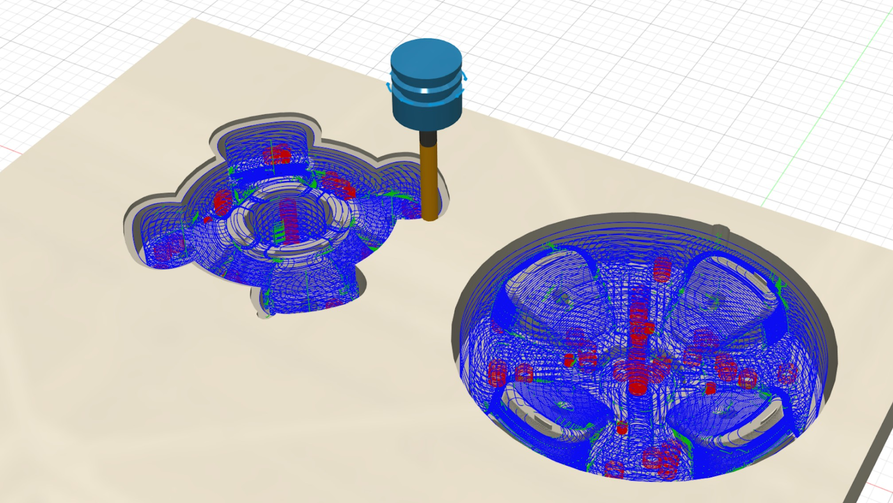
3D Printing
To verify that the foam mold matched the original CAD file, a FDM 3D printed model of the outboard plug
was printed out of polycarbonate filament, in the off chance that we would need to use the print as the mold instead.
To test the warpage and whether the print would behave irregularly under the heat, we left the print in the oven for
3 hours at 200°F, which would be roughly the temperature conditions of the bake.
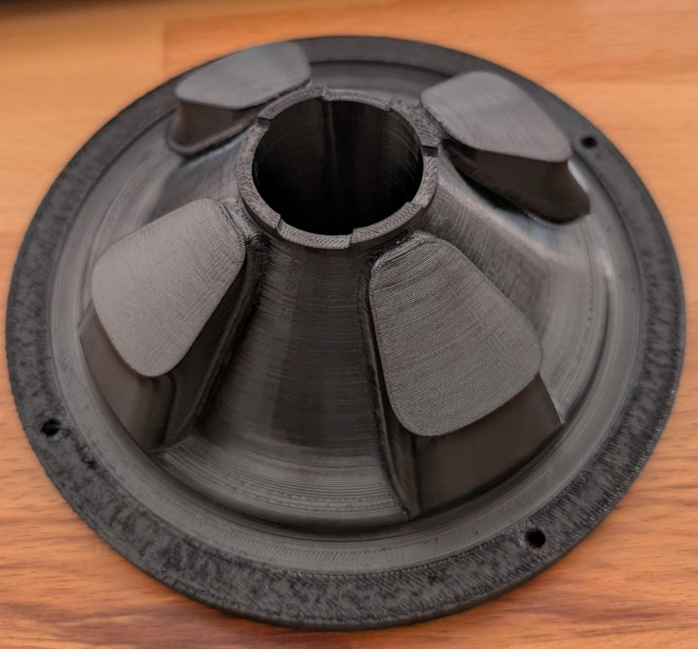
Mold Preparation
To stack and glue the machined parts of the plug, wood glue was used and the part was aligned with 12” long bolts from home depot
and weight added on top while setting. Although wood glue usually acts as a gap filler, there were still seam lines that would show through in the final part, so 3M Glazing Putty was used to fill any
gaps or irregularities. The putty dried hard and was sanded to match the mold surface with 180, 220, then 360 grit sandpaper per the product specification.
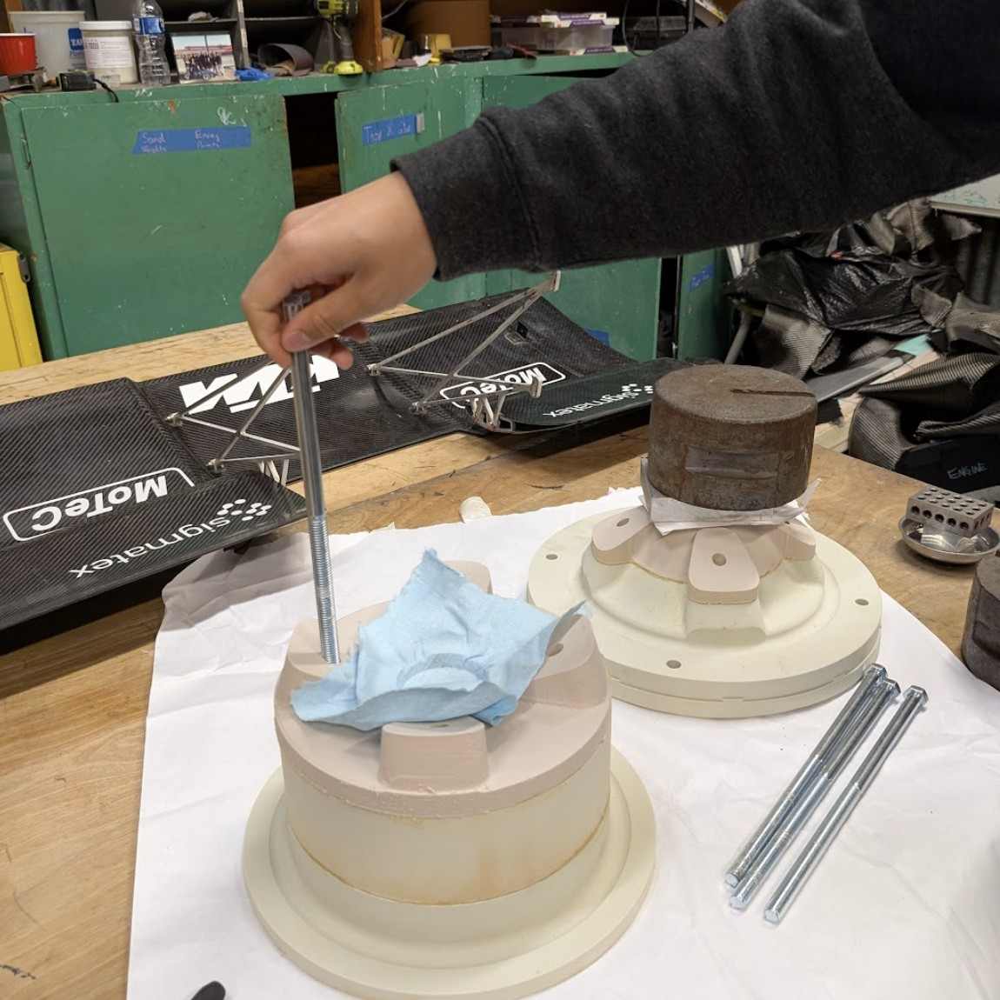
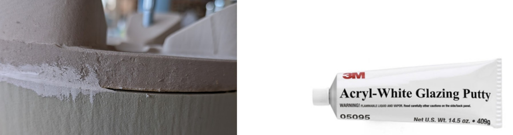
The mold was sanded until there were no more tooling traces or irregularities and until the fitment of the plugs had a uniform seam with as
little gap as possible, since this finished surface would be visible on the part. After cleaning off the remaining debris, the part was sprayed
with Duratec Polyester Surfacing Primer which is supposed to eliminate the porosity of the foam and is designed to stick to polyurethane foam.
Following the specification, the primer is sprayed with a pressure of 35-40 psi and allowed to tack before adding another layer. The primer was left
to set for at least 8 hours before sanded from 220 grit to a surface finish.
After two layers of surface primer and two rounds of sanding, the goal was to normalize the mold surface roughness until all porosity is visibly gone
and even. For mold release, we wiped on 3 layers of Airtech Safelease 30, allowing for 30 minutes in between coats as per the datasheet.
As an extra measure, RW4 Spray Wax Release Agent from Easy Composites was sprayed on as the last mold release application step.
Material
To capture the wheel’s intricate geometry, the wheel was produced with Axiom-5420-22CK, an epoxy prepreg. Based on the material specification,
the matrix consists of toughened, high temperature, flame retardant epoxy and the fiber is a 3K Carbon/Kevlar hybrid on a 2x2 twill-weave
that is high impact resistance and has a fabric weight of 190 gsm. Epoxy prepreg is more rigid during the pre-processing step due to the matrix
being frozen into the fibers, so cutting out templates will make the layup process cleaner and reduce potential manufacturing error.
With a flexible cure temperature given by the manufacturer’s spreadsheets, we utilized a cure-temp of 200F to reduce the required cure-time
while still maintaining within the temperature range of our mold materials. However, there is no cure-time published by the manufacturer of the
prepreg for a 200F cure-temp. Therefore, we utilized the logarithmic relationship between reaction-rate and temperature from the Arrhenius
equation to generate a best-fit line and estimate our own cure-time for a 200F cure-temp as shown below
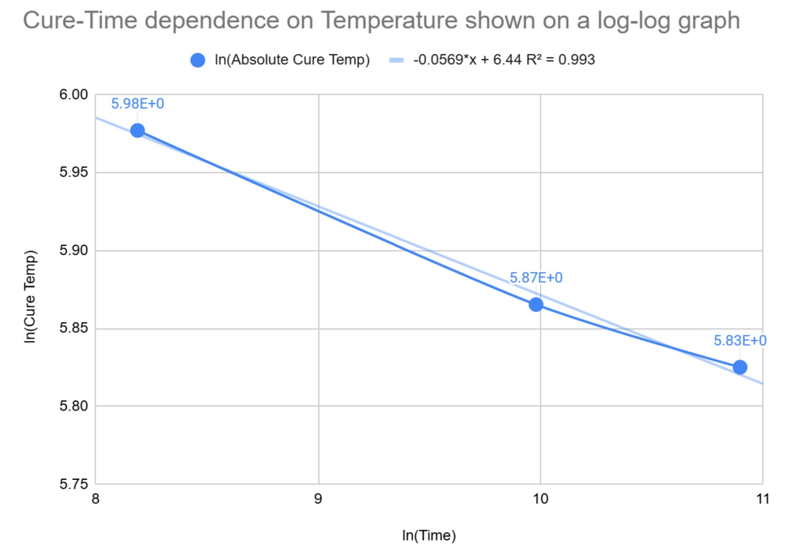
With a high R^2 score of 0.993, we can be confident in our line of best-fit. We utilize this equation of the best-fit line to calculate the cure-time.
$$
\begin{aligned}
\ln(Cure\ Temp) &= -0.0569 \cdot \ln(Time) + 6.44 \\[12pt]
\ln(Time) &= \frac{\ln(Cure\ Temp) - 6.44}{-0.0569}
\end{aligned}
$$
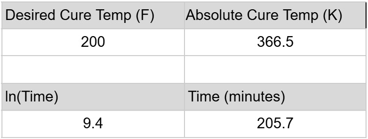
Ply Stackup and Orientation
The stackup was sequenced to account for the wheel’s variable thickness while also using a symmetrical and balanced layup, as it allows for
more predictable stress distribution and stiffness properties. This allows us to utilize Quasi-Isotropic Balanced and Symmetric (QIBS)
assumptions for calculating part-strength if materials testing of sample coupons were to be conducted in the future. Since one of the
main goals was to preserve longitudinal stiffness, 0° plies are the innermost and outermost layers for axial stiffness, intended to handle
forces along the direction of rotation and keep the wheel rigid under compression and tension. The 45° plies resist shear forces during
acceleration, braking, cornering, and provide torsional stiffness.The 90° plies improve resistance against impacts, distributing radial
loads evenly across the structure. Despite the wheel being variable thickness, maintaining symmetrical plies will reduce warping and bending.
The photo on the right shows a 3D printed plug filling the insert slot, after deciding that it would be more advantageous to have a surface rather
than a through hole for the insert.
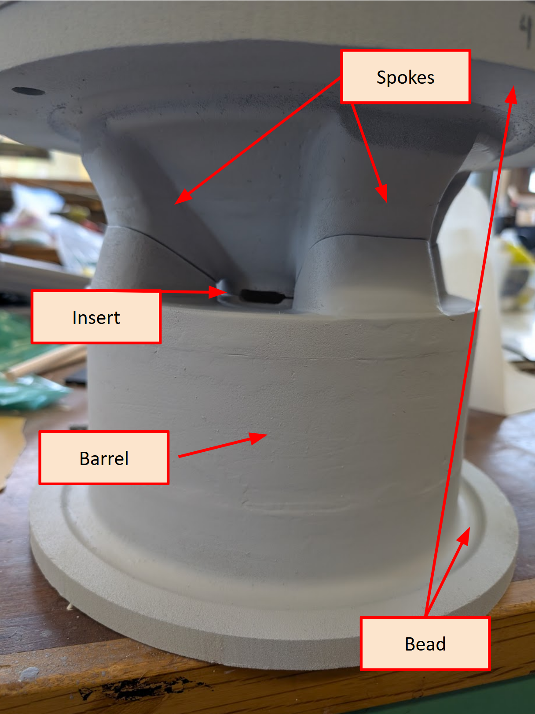
We had a cured 2 ply sample of the Axiom-5420 and it measured to 1 mm. We used this to determine the plies needed. To make sure each component has
the required plies, we needed a strategy to cover the entire wheel at once, essentially one pass through that covers all the surfaces.
The maximum of these full wheel sweepthroughs is 7 since we are limited by the thickness of the spokes. However, a repeating layup with the same seam
lines would be extremely failure prone since all the discontinuities would be concentrated in one area.
Thus, we devised a layup sequence with 2 full wheel operations
that cover the wheel from bead to bead. Operation 1 covers the wheel circumferentially while Operation 2 covers the wheel axially. This creates a
cross ply structure which is stronger and each operation will cover the previous seamlines. Each operation was broken up into specific templates
that could be followed. The contrasting operations are sketched out below
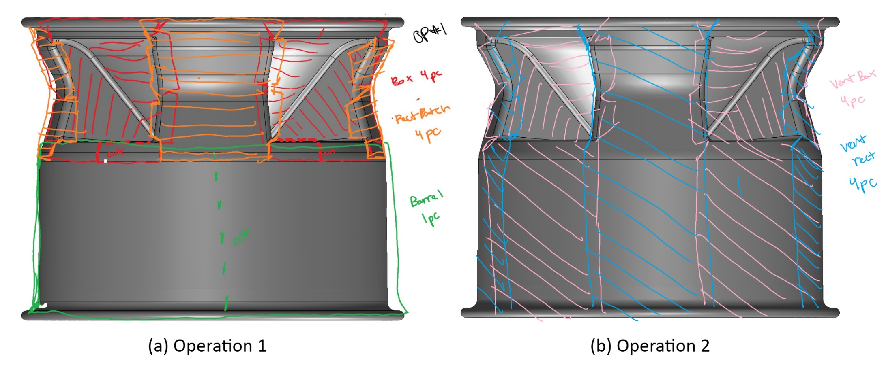
Operation 1 has three components:
Box: The hollowed recesses of the spokes, includes outboard bead material.
Rectangular patch: The outer walls of the spokes, includes outboard bead material.
Barrel: The strip that wraps around the wheel, includes inboard bead material.
Operation 2 has two components:
Vertical box: The hollowed recesses of the spokes extended to include outboard & inboard bead material.
Vertical rectangle: The outer walls of the spokes extended to include outboard & inboard bead material.
Since there would be many relief cuts and seam lines during the process, making templates were essential
to streamline material preparation and make sure all the areas were covered as planned. We explored the SolidWorks flattening feature,
however, the template was ultimately laid on top of the mold and fitted by hand. During this process,
extra material was also added for overlap.
Layup and Cure
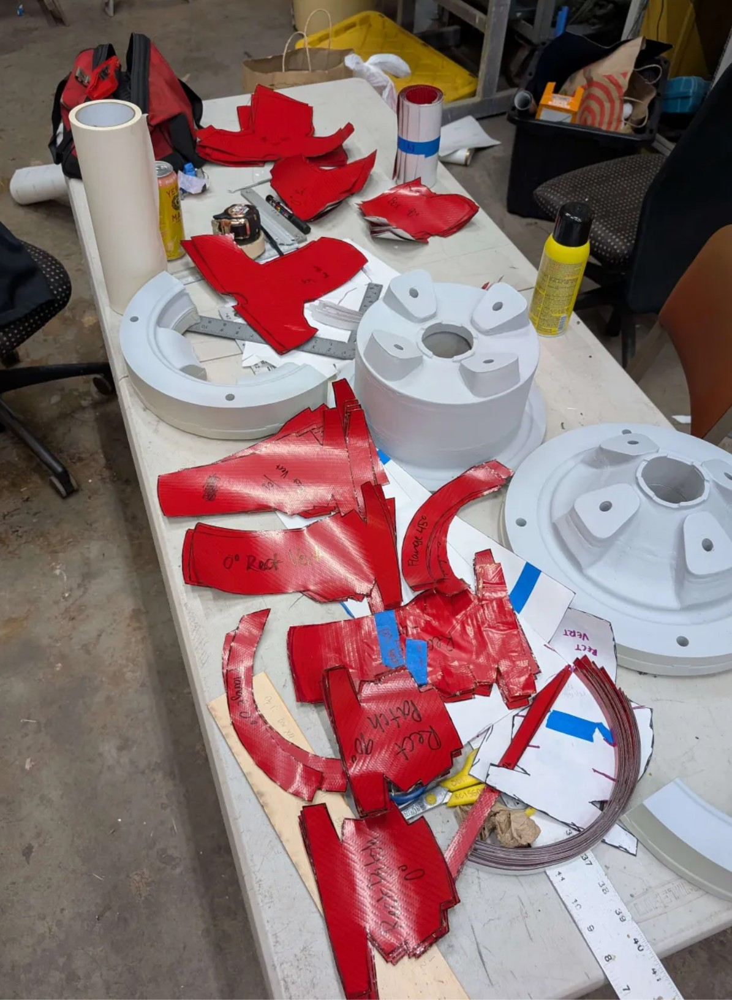
As per the datasheet, the prepreg was taken out 4-6 hours before cutting to stabilize to room temperature. Using the templates, all the pieces were cut out and
labeled while the mold was being prepped.
To formulate the most optimal manufacturing sequence, we split the layup procedure into two phases according to our mold design.
The first phase involves wrapping strips of the fabric concentrically to fill the insert ring space on the inboard plug before then
stacking the outboard plug to constrain the ring. We alternated strips of 0, 45, and 90 degrees as the ring was being formed. This ensures the seam
line is continuous all the way around as the radius grows once more material is added.
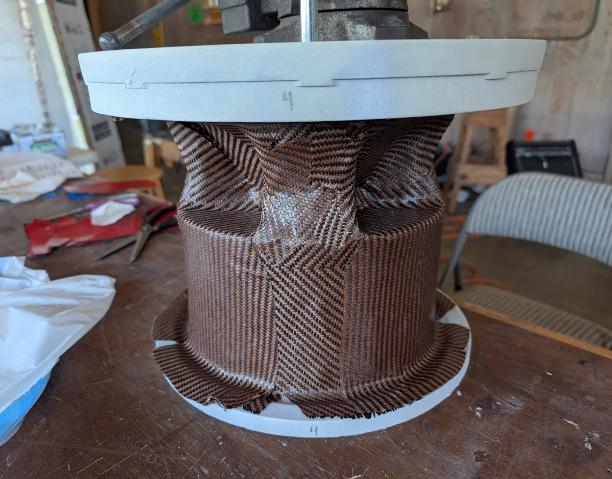
We fit the aluminum insert into the mold cavity when joining the mold plugs together. After that, rods and weight were placed on top of the
joined mold to keep the part compressed and aligned. We followed the sequence and began laying the first layers, attempting to match the fibers
at the seam line. As a note, there is a little excess fabric on the top edge of the barrel piece intended to fold over onto the hollow spoke area.
Once all the plies have been applied and sufficiently flattened, perforated release film is added in a similar manner, attempting to conform to the
mold geometry. The perforation is to allow epoxy to seep into the breather, overwise the part would be oversaturated and brittle. The part was wrapped
in breather material, which acts as a buffer medium for the vacuum to pull through even when there is vacuum compression. The part was vacuum bagged
with lots of excess bag to account for the hollow cavities. The final vacuumed part then went into the hot box and vacuum was pulled. Full vacuum was defined at 29.92 inHg.
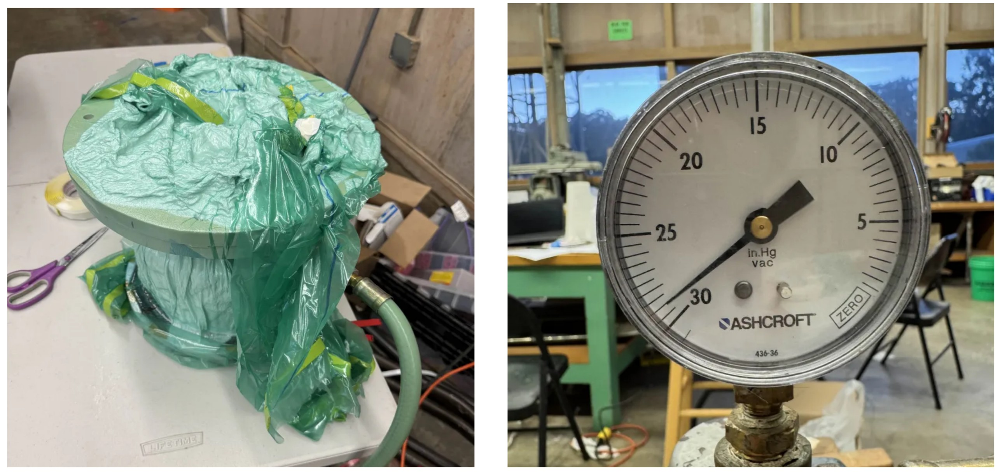
Results
The CFRP Wheel weighed 575 grams and the aluminum insert weighed 126 grams, resulting in a combined weight of 701 grams.
This was a 3.5X mass reduction from the 2483 gram weight of the original aluminum wheel assembly
The process taught us the challenges of maintaining surface uniformity and ensuring durability without a core material. While this wheel is not yet at the standard
for performance testing, the process provided valuable insights into composite fabrication and structural design.
The bead requires further development to improve durability and performance in order to be pressure bearing, and the insert needs a redesign to
ensure better integration and load distribution. Before performance testing, we can utilize Instron testing equipment to check tensile and
compression properties, conduct deformation experiments, and cut the wheel to inspect the part more closely and verify part thickness.
However, the ply stackup sequence and mold manufacturing steps were useful learning experiences, offering a deeper understanding of material behavior,
structural optimization, and process refinement.
Skills Demonstrated
Composite structures • Laminate design and planning • Reusable mold design • CNC Router • CAM • Analysis (Stress and factor-of-safety calcs, Load path analysis, DFM, Strength vs. weight optimization) •
Failure modes (delamination, fiber fracture) • Design optimization • CAD (SolidWorks) • Experimental validation • Engineering tradeoff analysis